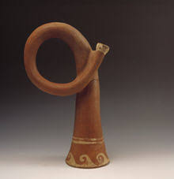

The earliest metal trumpets are thought to have been made around 1500 BC. Trumpets made of bronze and silver were found in King Tut's grave. This, however, is not necessarily the origin of people creating sound by blowing through something. There are records of people in early civilizations blowing through conch shells or other shells to create sound. The pictures below demonstrate some of the earliset types of trumpet-like instruments. (See History)
Because the trumpet is and has been so popular, it is clear to see why there are so many renouned trumpet players. Some of the most famous trumpet artists are jazz musicians. This is because the trumpet is one of the "jazziest" instruments next to the saxophone. (See Artists)
The trumpet has a construction that is very similar to most other brass instruments. There are valves and slides that are used to adjust pitch. The noise is made by buzzing the lips and blowing. (See Construciton)